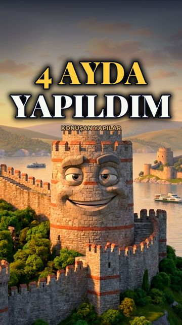
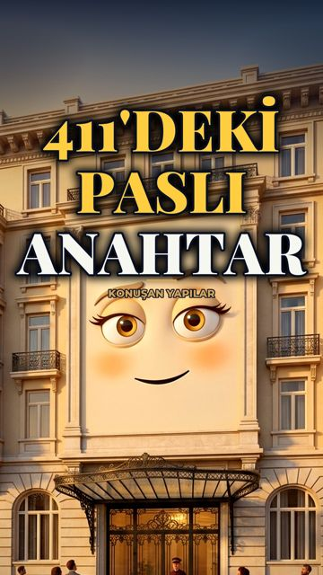
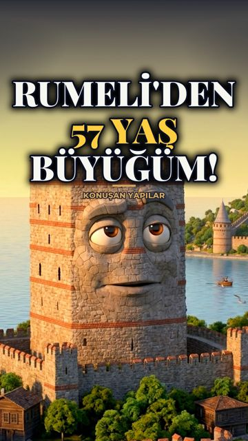
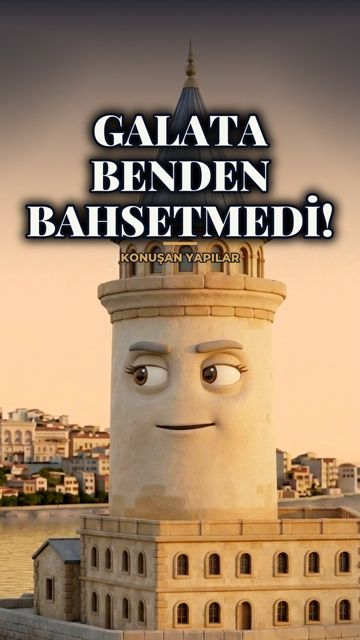

Tarihi yapılar kendi hikâyesini anlatıyor.
Markanız da onların ağzından.
Her akşam bir tarihi yapı, bir dakikada kendi hikâyesini birinci ağızdan anlatıyor. İzleyen hem eğleniyor hem bir şey öğreniyor, sonra bir arkadaşına gönderiyor.
E-posta ile yazın Instagram'da izleyinRakamlar
Son 30 gündeki izlenmelerde bizi henüz takip etmeyenlerin payı %93: videolar keşfet ve Reels akışında yayılıyor. YouTube'da 26.000+ izlenme. Kaynak: Instagram ve YouTube istatistikleri · son güncelleme 25 Kasım 2026.
Kim izliyor?
- Kadın takipçi oranı %53; 25–44 yaş arası %72.
- Takipçilerin en çok olduğu şehir İstanbul (%66); ardından Ankara, İzmir, Bursa.
- Türkiye'den sonra en çok izlenen ülke: Almanya.
- Tarihe, şehre, gezmeye ve hikâyeye meraklı bir kitle.
En çok izlenenler

321.000+Rumeli Hisarı

93.000+Pera Palas Oteli

65.000+Anadolu Hisarı

40.000+Kız Kulesi
Neler yapabiliriz?
Konuşan Mekân
İşletmenizin binası ya da kendisi, kendi hikâyesini anlatır: tarihi otel, han, restoran, köklü dükkân. Size özel bir video; hem bizim hem sizin profilinizde ortak gönderi (Collab) olarak yayınlanır.
Komşu tanıtımı
Bir tarihi yapının videosunun sonunda, 8–10 saniyede yapı sizi komşusu olarak tanıtır. Otelinizin, restoranınızın gerçek görüntüleriyle.
Etkinlik duyurusu
Yapı kendi etkinliğini anlatır: konser, sergi, kermes, gezi. Bilet ya da kayıt bağlantısı story'de.
Story paketi
Video yayınlandığı gün bağlantılı story'ler ve profilde kalıcı öne çıkan.
Her iş birliği YouTube Shorts'ta da yayınlanır. Fiyat ve takvim için e-posta ile yazın.
Nasıl çalışıyoruz?
- Kısa bir görüşme: ne anlatmak istediğinizi dinliyoruz.
- Senaryo metnini onayınıza sunuyoruz.
- Videoyu üretiyoruz, son hâlini yine onayınıza sunuyoruz.
- Yayından 3 ve 7 gün sonra rakamlarla kısa bir rapor gönderiyoruz.
Hikâye bölünmez; reklam bölümü videonun sonunda, yapının kendi sesiyle ve esprisiyle gelir. Videoda ve açıklamada yasal "Reklam" ibaresi bulunur. Markanız hakkında yalnızca doğru olanı söyleriz.
İletişim
Doğukan · konusanyapilarr@gmail.com
Instagram: @konusanyapilar · YouTube: @konusanyapilar